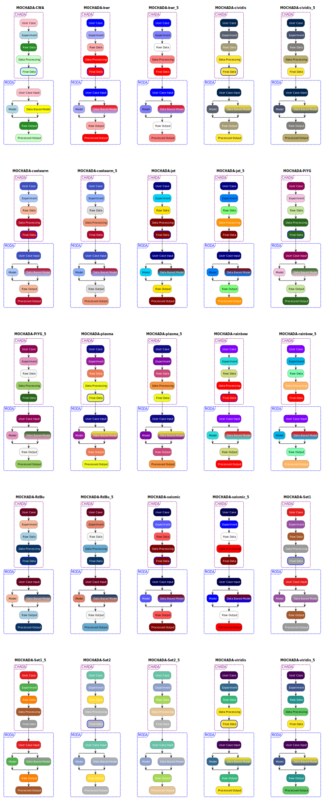

Displaying a legend with MODA and CHADA elements for all MOCHADA themes in a single diagram#
This example shows how to pack a legend (a.k.a colour key) showing all MODA and CHADA elements grouped, for each MOCHADA theme into a single svg image for easy comparison.
[1]:
import contextlib
import glob
import pathlib
import mochada_kit.running as mr
Get the paths to all the MOCHADA themes in mochada_kit/themes
[2]:
theme_files = glob.glob(str(pathlib.Path("../../themes/puml-theme-MOCHADA-*.puml")))
themes = [str(i).split("puml-theme-")[1][:-5] for i in theme_files]
Make sure the theme based on the current working agreement (CWA) comes first in the list, and remove the themes “MOCHADA-plasma_A4w” and “MOCHADA-plasma_wide”, if they are present - these themes look the same as “MOCHADA-plasma” in a colour key but have one parameter changed to make CHADA tables fit better onto an A4 page/wide screen.
[3]:
themes.remove("MOCHADA-CWA")
themes.insert(0, "MOCHADA-CWA")
for i in ["MOCHADA-plasma_A4w", "MOCHADA-plasma_wide"]:
with contextlib.suppress(ValueError):
themes.remove(i)
Now we write the same key (an activity element for each of the CHADA and MODA elements with its corresponding stereotype, grouped into CHADA and MODA) for each theme into a different “label” in the diagram. There appears to be little control of placing the keys in rows and columns but this adjusts automatically as you add more themes.
[4]:
with open(
pathlib.Path("../../gallery/puml_code/legend_moda_and_chada_all_themes.puml"), "w"
) as f:
f.write("@startuml\n")
for i, j in enumerate(themes):
f.write(f"label l{i+1} [\n")
f.write("{{\n")
chada_blocks_uml = f"""!theme {j} from ../../themes
title {j}
group CHADA <<group_chada>>
:User Case; <<user_case>>
:Experiment; <<experiment>>
:Raw Data; <<raw_data>>
:Data Processing; <<data_processing>>
:Final Data; <<final_data>>
end group
group MODA <<group_moda>>
:User Case Input; <<user_case_input>>
split
:Model; <<model>>
split again
:Data Based Model; <<data_based_model>>
end split
:Raw Output; <<raw_output>>
:Processed Output; <<processed_output>>
end group
"""
f.write(chada_blocks_uml)
f.write("}}\n]\n")
f.write("@enduml\n")
Finally we run the puml code to generate the svg diagram
[5]:
mr.run_plantuml_code(
pathlib.Path("../../gallery/puml_code/legend_moda_and_chada_all_themes.puml"),
output_dir=pathlib.Path("../"),
)
Here’s the diagram:
